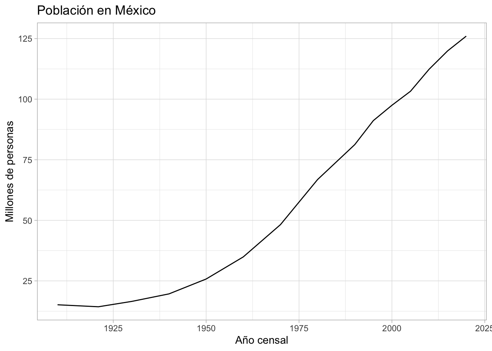

En esta breve práctica revisaremos un poco de los gráficos de series de tiempo, y con esa excusa, bajaremos datos del INEGI directamente a nuestro ambiente.
Hay un paquete especializado (que antes funcionaba mejor) que nos permite descargar algunos indicadores del INEGI {inegiR}, específicamente los del Banco de Información Económica (BIE) y el paquete {siebanxicor} que consulta los catálogos de Banxico.
4.2 Token
Necesitamos crear un objeto donde esté nuestro token solicitado en INEGI y que llegó al correo electrónico
token <- "aquí va tu token"
El token está ligado a tu cuenta de correo, no lo compartas porque si alguien lo utiliza mal, tu cuenta puede ser bloqueada.
4.3 Paquetes
if(!require('pacman')) install.packages('pacman')
Cargando paquete requerido: pacman
pacman::p_load(tidyverse, # ya lo conocemos inegiR, # para consultas en el BIE siebanxicor, httr, jsonlite, # Para consultas en todo el banco plotly, # gráficos interactivos lubridate, # para manejo de fechas TTR)
inegiR::inegi_series(serie=628194,# este número está en el sitio este el IPCtoken = token)
date date_shortcut values notes
1 2024-07-01 M7 136.00300000 NA
2 2024-06-01 M6 134.59400000 NA
3 2024-05-01 M5 134.08700000 NA
4 2024-04-01 M4 134.33600000 NA
5 2024-03-01 M3 134.06500000 NA
6 2024-02-01 M2 133.68100000 NA
7 2024-01-01 M1 133.55500000 NA
8 2023-12-01 M12 132.37300000 NA
9 2023-11-01 M11 131.44500000 NA
10 2023-10-01 M10 130.60900000 NA
11 2023-09-01 M9 130.12000000 NA
12 2023-08-01 M8 129.54500000 NA
13 2023-07-01 M7 128.83200000 NA
14 2023-06-01 M6 128.21400000 NA
15 2023-05-01 M5 128.08400000 NA
16 2023-04-01 M4 128.36300000 NA
17 2023-03-01 M3 128.38900000 NA
18 2023-02-01 M2 128.04600000 NA
19 2023-01-01 M1 127.33600000 NA
20 2022-12-01 M12 126.47800000 NA
21 2022-11-01 M11 125.99700000 NA
22 2022-10-01 M10 125.27600000 NA
23 2022-09-01 M9 124.57100000 NA
24 2022-08-01 M8 123.80300000 NA
25 2022-07-01 M7 122.94800000 NA
26 2022-06-01 M6 122.04400000 NA
27 2022-05-01 M5 121.02200000 NA
28 2022-04-01 M4 120.80900000 NA
29 2022-03-01 M3 120.15900000 NA
30 2022-02-01 M2 118.98100000 NA
31 2022-01-01 M1 118.00200000 NA
32 2021-12-01 M12 117.30800000 NA
33 2021-11-01 M11 116.88400000 NA
34 2021-10-01 M10 115.56100000 NA
35 2021-09-01 M9 114.60100000 NA
36 2021-08-01 M8 113.89900000 NA
37 2021-07-01 M7 113.68200000 NA
38 2021-06-01 M6 113.01800000 NA
39 2021-05-01 M5 112.41900000 NA
40 2021-04-01 M4 112.19000000 NA
41 2021-03-01 M3 111.82400000 NA
42 2021-02-01 M2 110.90700000 NA
43 2021-01-01 M1 110.21000000 NA
44 2020-12-01 M12 109.27100000 NA
45 2020-11-01 M11 108.85600000 NA
46 2020-10-01 M10 108.77400000 NA
47 2020-09-01 M9 108.11400000 NA
48 2020-08-01 M8 107.86700000 NA
49 2020-07-01 M7 107.44400000 NA
50 2020-06-01 M6 106.74300000 NA
51 2020-05-01 M5 106.16200000 NA
52 2020-04-01 M4 105.75500000 NA
53 2020-03-01 M3 106.83800000 NA
54 2020-02-01 M2 106.88900000 NA
55 2020-01-01 M1 106.44700000 NA
56 2019-12-01 M12 105.93400000 NA
57 2019-11-01 M11 105.34600000 NA
58 2019-10-01 M10 104.50300000 NA
59 2019-09-01 M9 103.94200000 NA
60 2019-08-01 M8 103.67000000 NA
61 2019-07-01 M7 103.68700000 NA
62 2019-06-01 M6 103.29900000 NA
63 2019-05-01 M5 103.23300000 NA
64 2019-04-01 M4 103.53100000 NA
65 2019-03-01 M3 103.47600000 NA
66 2019-02-01 M2 103.07900000 NA
67 2019-01-01 M1 103.10800000 NA
68 2018-12-01 M12 103.02000000 NA
69 2018-11-01 M11 102.30300000 NA
70 2018-10-01 M10 101.44000000 NA
71 2018-09-01 M9 100.91700000 NA
72 2018-08-01 M8 100.49200000 NA
73 2018-07-01 M7 99.90909910 NA
74 2018-06-01 M6 99.37646493 NA
75 2018-05-01 M5 98.99408017 NA
76 2018-04-01 M4 99.15484705 NA
77 2018-03-01 M3 99.49215698 NA
78 2018-02-01 M2 99.17137448 NA
79 2018-01-01 M1 98.79499970 NA
80 2017-12-01 M12 98.27288299 NA
81 2017-11-01 M11 97.69517399 NA
82 2017-10-01 M10 96.69826913 NA
83 2017-09-01 M9 96.09351524 NA
84 2017-08-01 M8 95.79376765 NA
85 2017-07-01 M7 95.32273574 NA
86 2017-06-01 M6 94.96363964 NA
87 2017-05-01 M5 94.72549432 NA
88 2017-04-01 M4 94.83893263 NA
89 2017-03-01 M3 94.72248933 NA
90 2017-02-01 M2 94.14478034 NA
91 2017-01-01 M1 93.60388244 NA
92 2016-12-01 M12 92.03903480 NA
93 2016-11-01 M11 91.61683394 NA
94 2016-10-01 M10 90.90615422 NA
95 2016-09-01 M9 90.35774385 NA
96 2016-08-01 M8 89.80933349 NA
97 2016-07-01 M7 89.55691448 NA
98 2016-06-01 M6 89.32402789 NA
99 2016-05-01 M5 89.22561452 NA
100 2016-04-01 M4 89.62527796 NA
101 2016-03-01 M3 89.91000060 NA
102 2016-02-01 M2 89.77778112 NA
103 2016-01-01 M1 89.38638139 NA
104 2015-12-01 M12 89.04681772 NA
105 2015-11-01 M11 88.68546788 NA
106 2015-10-01 M10 88.20391850 NA
107 2015-09-01 M9 87.75241902 NA
108 2015-08-01 M8 87.42487529 NA
109 2015-07-01 M7 87.24081976 NA
110 2015-06-01 M6 87.11310776 NA
111 2015-05-01 M5 86.96736583 NA
112 2015-04-01 M4 87.40384038 NA
113 2015-03-01 M3 87.63071699 NA
114 2015-02-01 M2 87.27537713 NA
115 2015-01-01 M1 87.11010277 NA
116 2014-12-01 M12 87.18898371 NA
117 2014-11-01 M11 86.76377787 NA
118 2014-10-01 M10 86.06962558 NA
119 2014-09-01 M9 85.59633992 NA
120 2014-08-01 M8 85.21996514 NA
121 2014-07-01 M7 84.91495883 NA
122 2014-06-01 M6 84.68207224 NA
123 2014-05-01 M5 84.53557906 NA
124 2014-04-01 M4 84.80677925 NA
125 2014-03-01 M3 84.96529239 NA
126 2014-02-01 M2 84.73315704 NA
127 2014-01-01 M1 84.51905163 NA
128 2013-12-01 M12 83.77005830 NA
129 2013-11-01 M11 83.29226516 NA
130 2013-10-01 M10 82.52298816 NA
131 2013-09-01 M9 82.13233968 NA
132 2013-08-01 M8 81.82432839 NA
133 2013-07-01 M7 81.59219304 NA
134 2013-06-01 M6 81.61923793 NA
135 2013-05-01 M5 81.66882024 NA
136 2013-04-01 M4 81.94152293 NA
137 2013-03-01 M3 81.88743314 NA
138 2013-02-01 M2 81.29094297 NA
139 2013-01-01 M1 80.89278202 NA
140 2012-12-01 M12 80.56824328 NA
141 2012-11-01 M11 80.38343650 NA
142 2012-10-01 M10 79.84103612 NA
143 2012-09-01 M9 79.43911894 NA
144 2012-08-01 M8 79.09054030 NA
145 2012-07-01 M7 78.85389747 NA
146 2012-06-01 M6 78.41366669 NA
147 2012-05-01 M5 78.05381934 NA
148 2012-04-01 M4 78.30097963 NA
149 2012-03-01 M3 78.54738867 NA
150 2012-02-01 M2 78.50231384 NA
151 2012-01-01 M1 78.34304946 NA
152 2011-12-01 M12 77.79238536 NA
153 2011-11-01 M11 77.15833283 NA
154 2011-10-01 M10 76.33271230 NA
155 2011-09-01 M9 75.82111305 NA
156 2011-08-01 M8 75.63555502 NA
157 2011-07-01 M7 75.51610674 NA
158 2011-06-01 M6 75.15550814 NA
159 2011-05-01 M5 75.15926438 NA
160 2011-04-01 M4 75.71744095 NA
161 2011-03-01 M3 75.72345093 NA
162 2011-02-01 M2 75.57846024 NA
163 2011-01-01 M1 75.29599135 NA
164 2010-12-01 M12 74.93095445 NA
165 2010-11-01 M11 74.56158125 NA
166 2010-10-01 M10 73.96892635 NA
167 2010-09-01 M9 73.51511019 NA
168 2010-08-01 M8 73.13174950 NA
169 2010-07-01 M7 72.92919000 NA
170 2010-06-01 M6 72.77118323 NA
171 2010-05-01 M5 72.79397765 NA
172 2010-04-01 M4 73.25556464 NA
173 2010-03-01 M3 73.48972549 NA
174 2010-02-01 M2 72.97167051 NA
175 2010-01-01 M1 72.55204598 NA
176 2009-12-01 M12 71.77185517 NA
177 2009-11-01 M11 71.47604578 NA
178 2009-10-01 M10 71.10719063 NA
179 2009-09-01 M9 70.89271587 NA
180 2009-08-01 M8 70.53888432 NA
181 2009-07-01 M7 70.37051645 NA
182 2009-06-01 M6 70.17935416 NA
183 2009-05-01 M5 70.05035847 NA
184 2009-04-01 M4 70.25499019 NA
185 2009-03-01 M3 70.00995018 NA
186 2009-02-01 M2 69.60949368 NA
187 2009-01-01 M1 69.45614941 NA
188 2008-12-01 M12 69.29555236 NA
189 2008-11-01 M11 68.81894178 NA
190 2008-10-01 M10 68.04548569 NA
191 2008-09-01 M9 67.58493481 NA
192 2008-08-01 M8 67.12749227 NA
193 2008-07-01 M7 66.74205936 NA
194 2008-06-01 M6 66.37216810 NA
195 2008-05-01 M5 66.09863507 NA
196 2008-04-01 M4 66.17012666 NA
197 2008-03-01 M3 66.01989072 NA
198 2008-02-01 M2 65.54483430 NA
199 2008-01-01 M1 65.35056368 NA
200 2007-12-01 M12 65.04905568 NA
201 2007-11-01 M11 64.78122126 NA
202 2007-10-01 M10 64.32740509 NA
203 2007-09-01 M9 64.07770259 NA
204 2007-08-01 M8 63.58399619 NA
205 2007-07-01 M7 63.32600481 NA
206 2007-06-01 M6 63.05817039 NA
207 2007-05-01 M5 62.98253436 NA
208 2007-04-01 M4 63.29129513 NA
209 2007-03-01 M3 63.32911314 NA
210 2007-02-01 M2 63.19234663 NA
211 2007-01-01 M1 63.01620793 NA
212 2006-12-01 M12 62.69242357 NA
213 2006-11-01 M11 62.33185730 NA
214 2006-10-01 M10 62.00651878 NA
215 2006-09-01 M9 61.73661213 NA
216 2006-08-01 M8 61.11960865 NA
217 2006-07-01 M7 60.80929371 NA
218 2006-06-01 M6 60.64299806 NA
219 2006-05-01 M5 60.59067451 NA
220 2006-04-01 M4 60.86161727 NA
221 2006-03-01 M3 60.77251181 NA
222 2006-02-01 M2 60.69635773 NA
223 2006-01-01 M1 60.60362589 NA
224 2005-12-01 M12 60.25031239 NA
225 2005-11-01 M11 59.88249335 NA
226 2005-10-01 M10 59.45457994 NA
227 2005-09-01 M9 59.30900649 NA
228 2005-08-01 M8 59.07225536 NA
229 2005-07-01 M7 59.00179988 NA
230 2005-06-01 M6 58.77178347 NA
231 2005-05-01 M5 58.82825146 NA
232 2005-04-01 M4 58.97641519 NA
233 2005-03-01 M3 58.76712098 NA
234 2005-02-01 M2 58.50343099 NA
235 2005-01-01 M1 58.30916037 NA
236 2004-12-01 M12 58.30708815 NA
237 2004-11-01 M11 58.18689940 NA
238 2004-10-01 M10 57.69474717 NA
239 2004-09-01 M9 57.29791705 NA
240 2004-08-01 M8 56.82804118 NA
241 2004-07-01 M7 56.47939018 NA
242 2004-06-01 M6 56.33174451 NA
243 2004-05-01 M5 56.24160294 NA
244 2004-04-01 M4 56.38303195 NA
245 2004-03-01 M3 56.29807094 NA
246 2004-02-01 M2 56.10794476 NA
247 2004-01-01 M1 55.77431735 NA
248 2003-12-01 M12 55.42981079 NA
249 2003-11-01 M11 55.19254161 NA
250 2003-10-01 M10 54.73820739 NA
251 2003-09-01 M9 54.53823816 NA
252 2003-08-01 M8 54.21548991 NA
253 2003-07-01 M7 54.05333870 NA
254 2003-06-01 M6 53.97511240 NA
255 2003-05-01 M5 53.93055967 NA
256 2003-04-01 M4 54.10514420 NA
257 2003-03-01 M3 54.01293041 NA
258 2003-02-01 M2 53.67412245 NA
259 2003-01-01 M1 53.52544068 NA
260 2002-12-01 M12 53.30992980 NA
261 2002-11-01 M11 53.07887728 NA
262 2002-10-01 M10 52.65303609 NA
263 2002-09-01 M9 52.42198356 NA
264 2002-08-01 M8 52.10856030 NA
265 2002-07-01 M7 51.91118135 NA
266 2002-06-01 M6 51.76258618 NA
267 2002-05-01 M5 51.51142923 NA
268 2002-04-01 M4 51.40723497 NA
269 2002-03-01 M3 51.12794844 NA
270 2002-02-01 M2 50.86774985 NA
271 2002-01-01 M1 50.90047201 NA
272 2001-12-01 M12 50.43489879 NA
273 2001-11-01 M11 50.36514891 NA
274 2001-10-01 M10 50.17613537 NA
275 2001-09-01 M9 49.95038115 NA
276 2001-08-01 M8 49.48968755 NA
277 2001-07-01 M7 49.19820196 NA
278 2001-06-01 M6 49.32636377 NA
279 2001-05-01 M5 49.20997046 NA
280 2001-04-01 M4 49.09730863 NA
281 2001-03-01 M3 48.85088778 NA
282 2001-02-01 M2 48.54332816 NA
283 2001-01-01 M1 48.57547625 NA
284 2000-12-01 M12 48.30767118 NA
285 2000-11-01 M11 47.79028786 NA
286 2000-10-01 M10 47.38513583 NA
287 2000-09-01 M9 47.06107160 NA
288 2000-08-01 M8 46.71978519 NA
289 2000-07-01 M7 46.46446621 NA
290 2000-06-01 M6 46.28392024 NA
291 2000-05-01 M5 46.01137907 NA
292 2000-04-01 M4 45.84001827 NA
293 2000-03-01 M3 45.58068078 NA
294 2000-02-01 M2 45.32938031 NA
295 2000-01-01 M1 44.93083012 NA
296 1999-12-01 M12 44.33551639 NA
297 1999-11-01 M11 43.89577645 NA
298 1999-10-01 M10 43.50885123 NA
299 1999-09-01 M9 43.23501839 NA
300 1999-08-01 M8 42.82125526 NA
301 1999-07-01 M7 42.58157977 NA
302 1999-06-01 M6 42.30200620 NA
303 1999-05-01 M5 42.02587708 NA
304 1999-04-01 M4 41.77457661 NA
305 1999-03-01 M3 41.39468378 NA
306 1999-02-01 M2 41.01364281 NA
307 1999-01-01 M1 40.46977028 NA
308 1998-12-01 M12 39.47297432 NA
309 1998-11-01 M11 38.53278623 NA
310 1998-10-01 M10 37.86226893 NA
311 1998-09-01 M9 37.32737639 NA
312 1998-08-01 M8 36.73163210 NA
313 1998-07-01 M7 36.38187811 NA
314 1998-06-01 M6 36.03442041 NA
315 1998-05-01 M5 35.61348136 NA
316 1998-04-01 M4 35.33204206 NA
317 1998-03-01 M3 35.00453340 NA
318 1998-02-01 M2 34.59923784 NA
319 1998-01-01 M1 34.00392411 NA
320 1997-12-01 M12 33.27987451 NA
321 1997-11-01 M11 32.82004201 NA
322 1997-10-01 M10 32.45694082 NA
323 1997-09-01 M9 32.19961259 NA
324 1997-08-01 M8 31.80350220 NA
325 1997-07-01 M7 31.52321104 NA
326 1997-06-01 M6 31.25095691 NA
327 1997-05-01 M5 30.97611945 NA
328 1997-04-01 M4 30.69597181 NA
329 1997-03-01 M3 30.36788907 NA
330 1997-02-01 M2 29.99459809 NA
331 1997-01-01 M1 29.49888603 NA
332 1996-12-01 M12 28.75933645 NA
333 1996-11-01 M11 27.86708345 NA
334 1996-10-01 M10 27.45116754 NA
335 1996-09-01 M9 27.11275149 NA
336 1996-08-01 M8 26.68607171 NA
337 1996-07-01 M7 26.33603069 NA
338 1996-06-01 M6 25.96690173 NA
339 1996-05-01 M5 25.55084230 NA
340 1996-04-01 M4 25.09344962 NA
341 1996-03-01 M3 24.39982588 NA
342 1996-02-01 M2 23.87426203 NA
343 1996-01-01 M1 23.32975376 NA
344 1995-12-01 M12 22.52016727 NA
345 1995-11-01 M11 21.80960838 NA
346 1995-10-01 M10 21.28476212 NA
347 1995-09-01 M9 20.85564253 NA
348 1995-08-01 M8 20.43298127 NA
349 1995-07-01 M7 20.09958836 NA
350 1995-06-01 M6 19.69802427 NA
351 1995-05-01 M5 19.09209019 NA
352 1995-04-01 M4 18.32613326 NA
353 1995-03-01 M3 16.97361720 NA
354 1995-02-01 M2 16.02870735 NA
355 1995-01-01 M1 15.37699094 NA
356 1994-12-01 M12 14.81920437 NA
357 1994-11-01 M11 14.69036086 NA
358 1994-10-01 M10 14.61224530 NA
359 1994-09-01 M9 14.53593664 NA
360 1994-08-01 M8 14.43328665 NA
361 1994-07-01 M7 14.36632677 NA
362 1994-06-01 M6 14.30289457 NA
363 1994-05-01 M5 14.23168224 NA
364 1994-04-01 M4 14.16325130 NA
365 1994-03-01 M3 14.09422476 NA
366 1994-02-01 M2 14.02212406 NA
367 1994-01-01 M1 13.95037498 NA
368 1993-12-01 M12 13.84305490 NA
369 1993-11-01 M11 13.73830236 NA
370 1993-10-01 M10 13.67797303 NA
371 1993-09-01 M9 13.62226067 NA
372 1993-08-01 M8 13.52211219 NA
373 1993-07-01 M7 13.45012344 NA
374 1993-06-01 M6 13.38579712 NA
375 1993-05-01 M5 13.31113749 NA
376 1993-04-01 M4 13.23548040 NA
377 1993-03-01 M3 13.15959369 NA
378 1993-02-01 M2 13.08334531 NA
379 1993-01-01 M1 12.97731976 NA
380 1992-12-01 M12 12.81655348 NA
381 1992-11-01 M11 12.63662034 NA
382 1992-10-01 M10 12.53249354 NA
383 1992-09-01 M9 12.44289652 NA
384 1992-08-01 M8 12.33559223 NA
385 1992-07-01 M7 12.26027241 NA
386 1992-06-01 M6 12.18334519 NA
387 1992-05-01 M5 12.10143789 NA
388 1992-04-01 M4 12.02217132 NA
389 1992-03-01 M3 11.91594772 NA
390 1992-02-01 M2 11.79590044 NA
391 1992-01-01 M1 11.65777847 NA
392 1991-12-01 M12 11.44967987 NA
393 1991-11-01 M11 11.18637410 NA
394 1991-10-01 M10 10.91534274 NA
395 1991-09-01 M9 10.78985037 NA
396 1991-08-01 M8 10.68342298 NA
397 1991-07-01 M7 10.60958427 NA
398 1991-06-01 M6 10.51664758 NA
399 1991-05-01 M5 10.40744167 NA
400 1991-04-01 M4 10.30668755 NA
401 1991-03-01 M3 10.19983964 NA
402 1991-02-01 M2 10.05642472 NA
403 1991-01-01 M1 9.88387989 NA
404 1990-12-01 M12 9.63821395 NA
405 1990-11-01 M11 9.34372310 NA
406 1990-10-01 M10 9.10205989 NA
407 1990-09-01 M9 8.97306137 NA
408 1990-08-01 M8 8.84695044 NA
409 1990-07-01 M7 8.69873483 NA
410 1990-06-01 M6 8.54293859 NA
411 1990-05-01 M5 8.35883768 NA
412 1990-04-01 M4 8.21547155 NA
413 1990-03-01 M3 8.09230992 NA
414 1990-02-01 M2 7.95211985 NA
415 1990-01-01 M1 7.77603730 NA
416 1989-12-01 M12 7.41802958 NA
417 1989-11-01 M11 7.17585544 NA
418 1989-10-01 M10 7.07652502 NA
419 1989-09-01 M9 6.97339280 NA
420 1989-08-01 M8 6.90733278 NA
421 1989-07-01 M7 6.84214822 NA
422 1989-06-01 M6 6.77438464 NA
423 1989-05-01 M5 6.69309877 NA
424 1989-04-01 M4 6.60222444 NA
425 1989-03-01 M3 6.50494490 NA
426 1989-02-01 M2 6.43518354 NA
427 1989-01-01 M1 6.34902379 NA
428 1988-12-01 M12 6.19731639 NA
429 1988-11-01 M11 6.07065435 NA
430 1988-10-01 M10 5.99048648 NA
431 1988-09-01 M9 5.94513902 NA
432 1988-08-01 M8 5.91134334 NA
433 1988-07-01 M7 5.85745654 NA
434 1988-06-01 M6 5.76129214 NA
435 1988-05-01 M5 5.64610869 NA
436 1988-04-01 M4 5.53894074 NA
437 1988-03-01 M3 5.37354743 NA
438 1988-02-01 M2 5.11178304 NA
439 1988-01-01 M1 4.71824594 NA
440 1987-12-01 M12 4.08639246 NA
441 1987-11-01 M11 3.56051142 NA
442 1987-10-01 M10 3.29884463 NA
443 1987-09-01 M9 3.04508139 NA
444 1987-08-01 M8 2.85687155 NA
445 1987-07-01 M7 2.64102153 NA
446 1987-06-01 M6 2.44314573 NA
447 1987-05-01 M5 2.27832506 NA
448 1987-04-01 M4 2.11860646 NA
449 1987-03-01 M3 1.94815270 NA
450 1987-02-01 M2 1.82738639 NA
451 1987-01-01 M1 1.70440129 NA
452 1986-12-01 M12 1.57673463 NA
453 1986-11-01 M11 1.46130432 NA
454 1986-10-01 M10 1.36882403 NA
455 1986-09-01 M9 1.29481167 NA
456 1986-08-01 M8 1.22153124 NA
457 1986-07-01 M7 1.13133289 NA
458 1986-06-01 M6 1.07756664 NA
459 1986-05-01 M5 1.01257010 NA
460 1986-04-01 M4 0.95926311 NA
461 1986-03-01 M3 0.91166672 NA
462 1986-02-01 M2 0.87117448 NA
463 1986-01-01 M1 0.83409223 NA
464 1985-12-01 M12 0.76634013 NA
465 1985-11-01 M11 0.71749512 NA
466 1985-10-01 M10 0.68585222 NA
467 1985-09-01 M9 0.66075231 NA
468 1985-08-01 M8 0.63537685 NA
469 1985-07-01 M7 0.60876282 NA
470 1985-06-01 M6 0.58827559 NA
471 1985-05-01 M5 0.57390224 NA
472 1985-04-01 M4 0.56062106 NA
473 1985-03-01 M3 0.54388540 NA
474 1985-02-01 M2 0.52359622 NA
475 1985-01-01 M1 0.50271145 NA
476 1984-12-01 M12 0.46799582 NA
477 1984-11-01 M11 0.44892941 NA
478 1984-10-01 M10 0.43403365 NA
479 1984-09-01 M9 0.41938044 NA
480 1984-08-01 M8 0.40724884 NA
481 1984-07-01 M7 0.39599271 NA
482 1984-06-01 M6 0.38342338 NA
483 1984-05-01 M5 0.37003169 NA
484 1984-04-01 M4 0.35815555 NA
485 1984-03-01 M3 0.34330428 NA
486 1984-02-01 M2 0.32923232 NA
487 1984-01-01 M1 0.31272772 NA
488 1983-12-01 M12 0.29404738 NA
489 1983-11-01 M11 0.28198324 NA
490 1983-10-01 M10 0.26634118 NA
491 1983-09-01 M9 0.25778750 NA
492 1983-08-01 M8 0.25009061 NA
493 1983-07-01 M7 0.24074613 NA
494 1983-06-01 M6 0.22940389 NA
495 1983-05-01 M5 0.22103390 NA
496 1983-04-01 M4 0.21184586 NA
497 1983-03-01 M3 0.19923205 NA
498 1983-02-01 M2 0.19003396 NA
499 1983-01-01 M1 0.18035509 NA
500 1982-12-01 M12 0.16265642 NA
501 1982-11-01 M11 0.14696270 NA
502 1982-10-01 M10 0.13989012 NA
503 1982-09-01 M9 0.13299550 NA
504 1982-08-01 M8 0.12625588 NA
505 1982-07-01 M7 0.11351720 NA
506 1982-06-01 M6 0.10795443 NA
507 1982-05-01 M5 0.10299301 NA
508 1982-04-01 M4 0.09751204 NA
509 1982-03-01 M3 0.09249895 NA
510 1982-02-01 M2 0.08923965 NA
511 1982-01-01 M1 0.08586554 NA
512 1981-12-01 M12 0.08180110 NA
513 1981-11-01 M11 0.07965694 NA
514 1981-10-01 M10 0.07815287 NA
515 1981-09-01 M9 0.07645648 NA
516 1981-08-01 M8 0.07506005 NA
517 1981-07-01 M7 0.07354449 NA
518 1981-06-01 M6 0.07227149 NA
519 1981-05-01 M5 0.07127547 NA
520 1981-04-01 M4 0.07021344 NA
521 1981-03-01 M3 0.06866487 NA
522 1981-02-01 M2 0.06722682 NA
523 1981-01-01 M1 0.06561511 NA
524 1980-12-01 M12 0.06356711 NA
525 1980-11-01 M11 0.06194248 NA
526 1980-10-01 M10 0.06088618 NA
527 1980-09-01 M9 0.05997772 NA
528 1980-08-01 M8 0.05931896 NA
529 1980-07-01 M7 0.05811485 NA
530 1980-06-01 M6 0.05653615 NA
531 1980-05-01 M5 0.05543680 NA
532 1980-04-01 M4 0.05454698 NA
533 1980-03-01 M3 0.05360981 NA
534 1980-02-01 M2 0.05252912 NA
535 1980-01-01 M1 0.05134222 NA
536 1979-12-01 M12 0.04895551 NA
537 1979-11-01 M11 0.04810445 NA
538 1979-10-01 M10 0.04749306 NA
539 1979-09-01 M9 0.04667788 NA
540 1979-08-01 M8 0.04611242 NA
541 1979-07-01 M7 0.04542496 NA
542 1979-06-01 M6 0.04488103 NA
543 1979-05-01 M5 0.04438876 NA
544 1979-04-01 M4 0.04381469 NA
545 1979-03-01 M3 0.04342575 NA
546 1979-02-01 M2 0.04284450 NA
547 1979-01-01 M1 0.04223742 NA
548 1978-12-01 M12 0.04078932 NA
549 1978-11-01 M11 0.04044631 NA
550 1978-10-01 M10 0.04003442 NA
551 1978-09-01 M9 0.03955507 NA
552 1978-08-01 M8 0.03910873 NA
553 1978-07-01 M7 0.03872266 NA
554 1978-06-01 M6 0.03807683 NA
555 1978-05-01 M5 0.03756016 NA
556 1978-04-01 M4 0.03719563 NA
557 1978-03-01 M3 0.03678660 NA
558 1978-02-01 M2 0.03640771 NA
559 1978-01-01 M1 0.03589248 NA
560 1977-12-01 M12 0.03511174 NA
561 1977-11-01 M11 0.03463239 NA
562 1977-10-01 M10 0.03425781 NA
563 1977-09-01 M9 0.03399804 NA
564 1977-08-01 M8 0.03340531 NA
565 1977-07-01 M7 0.03273365 NA
566 1977-06-01 M6 0.03236767 NA
567 1977-05-01 M5 0.03197587 NA
568 1977-04-01 M4 0.03169744 NA
569 1977-03-01 M3 0.03122527 NA
570 1977-02-01 M2 0.03068994 NA
571 1977-01-01 M1 0.03002689 NA
572 1976-12-01 M12 0.02909976 NA
573 1976-11-01 M11 0.02838791 NA
574 1976-10-01 M10 0.02716083 NA
575 1976-09-01 M9 0.02571273 NA
576 1976-08-01 M8 0.02486454 NA
577 1976-07-01 M7 0.02462917 NA
578 1976-06-01 M6 0.02442250 NA
579 1976-05-01 M5 0.02432491 NA
580 1976-04-01 M4 0.02415556 NA
581 1976-03-01 M3 0.02398764 NA
582 1976-02-01 M2 0.02375514 NA
583 1976-01-01 M1 0.02331885 NA
584 1975-12-01 M12 0.02287681 NA
585 1975-11-01 M11 0.02269167 NA
586 1975-10-01 M10 0.02253380 NA
587 1975-09-01 M9 0.02241898 NA
588 1975-08-01 M8 0.02225681 NA
589 1975-07-01 M7 0.02206593 NA
590 1975-06-01 M6 0.02189084 NA
591 1975-05-01 M5 0.02152487 NA
592 1975-04-01 M4 0.02124070 NA
593 1975-03-01 M3 0.02106274 NA
594 1975-02-01 M2 0.02093070 NA
595 1975-01-01 M1 0.02081589 NA
596 1974-12-01 M12 0.02055325 NA
597 1974-11-01 M11 0.02039394 NA
598 1974-10-01 M10 0.01984283 NA
599 1974-09-01 M9 0.01945677 NA
600 1974-08-01 M8 0.01923862 NA
601 1974-07-01 M7 0.01903770 NA
602 1974-06-01 M6 0.01876645 NA
603 1974-05-01 M5 0.01858275 NA
604 1974-04-01 M4 0.01843779 NA
605 1974-03-01 M3 0.01819094 NA
606 1974-02-01 M2 0.01805172 NA
607 1974-01-01 M1 0.01765274 NA
608 1973-12-01 M12 0.01704279 NA
609 1973-11-01 M11 0.01640557 NA
610 1973-10-01 M10 0.01620608 NA
611 1973-09-01 M9 0.01600085 NA
612 1973-08-01 M8 0.01562914 NA
613 1973-07-01 M7 0.01538229 NA
614 1973-06-01 M6 0.01499766 NA
615 1973-05-01 M5 0.01487567 NA
616 1973-04-01 M4 0.01471923 NA
617 1973-03-01 M3 0.01448960 NA
618 1973-02-01 M2 0.01436331 NA
619 1973-01-01 M1 0.01424562 NA
620 1972-12-01 M12 0.01404183 NA
621 1972-11-01 M11 0.01399446 NA
622 1972-10-01 M10 0.01390405 NA
623 1972-09-01 M9 0.01389400 NA
624 1972-08-01 M8 0.01383086 NA
625 1972-07-01 M7 0.01374044 NA
626 1972-06-01 M6 0.01368877 NA
627 1972-05-01 M5 0.01358831 NA
628 1972-04-01 M4 0.01356104 NA
629 1972-03-01 M3 0.01347637 NA
630 1972-02-01 M2 0.01340317 NA
631 1972-01-01 M1 0.01336155 NA
632 1971-12-01 M12 0.01330271 NA
633 1971-11-01 M11 0.01323956 NA
634 1971-10-01 M10 0.01321803 NA
635 1971-09-01 M9 0.01320511 NA
636 1971-08-01 M8 0.01316206 NA
637 1971-07-01 M7 0.01304294 NA
638 1971-06-01 M6 0.01305299 NA
639 1971-05-01 M5 0.01299415 NA
640 1971-04-01 M4 0.01296687 NA
641 1971-03-01 M3 0.01290085 NA
642 1971-02-01 M2 0.01285206 NA
643 1971-01-01 M1 0.01279896 NA
644 1970-12-01 M12 0.01267410 NA
645 1970-11-01 M11 0.01256789 NA
646 1970-10-01 M10 0.01250044 NA
647 1970-09-01 M9 0.01249613 NA
648 1970-08-01 M8 0.01246599 NA
649 1970-07-01 M7 0.01240859 NA
650 1970-06-01 M6 0.01234831 NA
651 1970-05-01 M5 0.01227368 NA
652 1970-04-01 M4 0.01224785 NA
653 1970-03-01 M3 0.01223206 NA
654 1970-02-01 M2 0.01219618 NA
655 1970-01-01 M1 0.01219761 NA
656 1969-12-01 M12 0.01210576 NA
657 1969-11-01 M11 0.01201535 NA
658 1969-10-01 M10 0.01201391 NA
659 1969-09-01 M9 0.01188905 NA
660 1969-08-01 M8 0.01177854 NA
661 1969-07-01 M7 0.01176562 NA
662 1969-06-01 M6 0.01172113 NA
663 1969-05-01 M5 0.01167951 NA
664 1969-04-01 M4 0.01167951 NA
665 1969-03-01 M3 0.01164794 NA
666 1969-02-01 M2 0.01163646 NA
667 1969-01-01 M1 0.01159484 NA
Podemos guardar esta consulta en un objeto y luego graficar
Vamos a hacer una función que nos haga la consulta:
url1 <-"https://www.inegi.org.mx/app/api/indicadores/desarrolladores/jsonxml/INDICATOR/"url2 <-"/es/0700/false/BISE/2.0/"url3<-"?type=json"#funcionconsulta_api<-function(token,indicador){ url<-paste0(url1,indicador,url2,token, url3) res=GET(url) resultado <-content(res, as ='text')%>%fromJSON()%>%#Se extrae elemento "Series"pluck("Series")%>%#Se extraen el elemento "OBSERVATIONS" que es aquel que contiene los datospluck("OBSERVATIONS")%>%#Se transforma a dataframe y se limpian los nombresas.data.frame()%>% janitor::clean_names() %>%#Se seleccionan las variables requeridasselect(time_period, obs_value)%>%#Se transforman a numérico mutate_all(as.numeric)return(resultado)}
Checa que dejo url que se pueda cambiar por si cambia el sistema de consulta.
Vamos a ver si funciona:
consulta_api(token=token,indicador ="1002000001") # este es población en general
guardamos nuestra consulta en un objeto y graficamos
consulta2<-consulta_api(token=token,indicador ="1002000001") # este es población en general
gploba<-consulta2 %>%ggplot(aes(x=time_period, y=obs_value/1000000))+geom_line() +theme_light()+labs(x="Año censal",y="Millones de personas",title="Población en México") gploba

4.6{plotly}
Vamos a hacerlo interactivo con {plotly} Este paquete vuelve interactivo cualquier grafico, pero lo exporta como html
interactivo<-ggplotly(gploba)interactivo
4.7 Consulta {siebanxicor}
4.7.1 Token otra vez
token2 <-"aquí va tu token"
siebanxicor::setToken(token2)
4.7.2 Consultas
Hay varios tipos de series, checa la disponibilidad